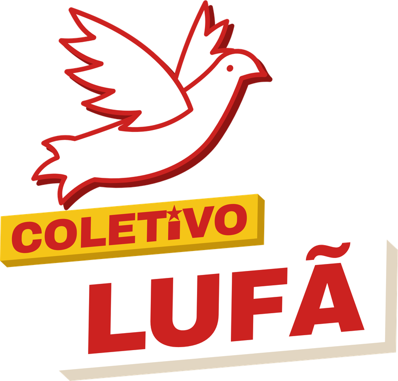

A ideia
Cartaz de luta, feito para o celular. A identidade do coletivo é prima da d'O Camarada: as duas vêm do cartaz soviético e construtivista, com raios de sol, faixas diagonais, estrelas e papel impresso. A diferença é que o Lufã é mais vermelho, mais direto e mais quente. O vermelho domina, o amarelo destaca e a pomba assina.
O Camarada fala como documentário, sobre fundo bege. O Lufã fala como cartaz de assembleia, sobre fundo vermelho. Quem segue os dois perfis percebe o parentesco sem confundir um com o outro.
Cores
Vermelho Lufã#CC2220 · fundo principal
Amarelo#EAB426 · destaques, faixas e estrela
Papel#FBF6EC · fundo dos textos longos
Tinta#1E1916 · tarjas, sombras e fechamento
Vermelho escuro#9E1715 · raios e sobreposição em fotos
Proporção ideal num post: muito vermelho, um pouco de papel ou tinta e o amarelo só no que importa.
Fontes
Títulos, etiquetas e @. Sempre em caixa alta. É a mesma fonte do site.
Citações e frases. Dá voz de livro às citações de Marx, Rosa, Lênin…
Textos explicativos. Nos slides de carrossel e nos subtítulos. Fácil de ler no celular.
Todas são gratuitas, do Google Fonts. Para destacar uma palavra, deixe-a amarela sobre o vermelho, ou vermelha sobre o papel. No gerador, basta escrever a palavra entre *asteriscos*.
O gerador também oferece a Metadannye (UkiyoMoji Fonts) para títulos e a ST Nizhegorodsky (Alexander Shimanov) para subtítulos e etiquetas, as mesmas d'O Camarada. As duas são gratuitas, inclusive para uso comercial.
Blocos em 3D: tarjas, etiquetas e faixas seguem os blocos da logo. Cada bloco vem levemente inclinado, com a espessura num tom mais escuro da mesma cor embaixo e à direita.
Logo e assinatura

Logo principal: pomba branca em voo sobre os blocos inclinados em 3D, "COLETIVO" no amarelo (com uma estrela no lugar do pingo do i) e "LUFÃ" no branco. Cores: só vermelho, amarelo e branco.
Assinatura pequena: a versão em linha (pomba + faixa "COLETIVO LUFÃ"), no canto superior esquerdo dos posts: faixa amarela sobre fundo vermelho ou escuro, faixa vermelha sobre fundo claro.
Sempre no post: o @coletivolufa, na faixa amarela inclinada (citações), na tarja preta (capa do carrossel) ou no slide final.
Em parceria com O Camarada: a logo do Lufã vai em cima, centralizada, e a marca d'O Camarada logo abaixo, como na capa do EP. 1.
Elementos
- Raios de sol: fundo de quase todos os posts vermelhos, em vermelho escuro ou branco bem transparente.
- Faixa diagonal amarela: leva o @ e as estrelas, inclinada cerca de 3°.
- Estrela de cinco pontas: separador (★) e destaque.
- Tarja de tinta: retângulo preto com texto claro para kickers, como "DESMISTIFICANDO O".
- Número grande vazado: amarelo com contorno preto, para numerar os pontos de um carrossel.
- Grão de papel: textura leve por cima de tudo, para o post parecer impresso. O gerador aplica sozinho.
- Figuras recortadas: pessoas e objetos sem fundo, com sombra chapada de tinta, apoiados na borda de baixo.
Modelos
Todos são feitos no Gerador de Posts. Os exemplos abaixo foram desenhados por ele, agora.
Formatos
- Feed (frase e carrossel): 1080 × 1350 px (4:5), o maior tamanho que o Instagram mostra no feed.
- Stories: 1080 × 1920 px. Deixe livres os 250 px de cima e de baixo, onde ficam os botões do Instagram; os modelos já respeitam isso.
- Capa de Reels: 1080 × 1920 px (9:16). No grid do perfil aparece só o miolo, então título e logo ficam no centro.
- Dado, notícia e meme: sempre com a fonte na arte ou na legenda. Foto de notícia só de agência pública (Agência Brasil, Câmara, Senado) ou com crédito.
- Carrossel: capa + de 3 a 8 slides + fechamento. A capa faz a pergunta, os slides respondem um ponto cada e o fechamento chama para seguir.
Tom de voz
- Direto e popular: frases curtas, palavras do dia a dia e exemplos da vida de quem trabalha.
- Firme sem ser agressivo: criticamos o sistema e as ideias, não pessoas comuns que pensam diferente.
- Com fonte: citação sempre com autor e obra; dado sempre com a origem na legenda.
- Chamando para a ação: todo post termina convidando a estudar, comentar, compartilhar ou se organizar.
Faça e não faça
Faça
- Um destaque amarelo por título, no máximo dois.
- Texto curto: se não cabe no slide, divida em dois.
- Fotos históricas em domínio público ou do acervo do coletivo, com crédito.
- Conferir o post no celular antes de publicar.
Não faça
- Esticar, girar ou trocar as cores da logo.
- Usar outras fontes ou cores fora da paleta.
- Texto amarelo sobre fundo papel: fica ilegível.
- Encher o post de efeitos: o cartaz é forte porque é simples.